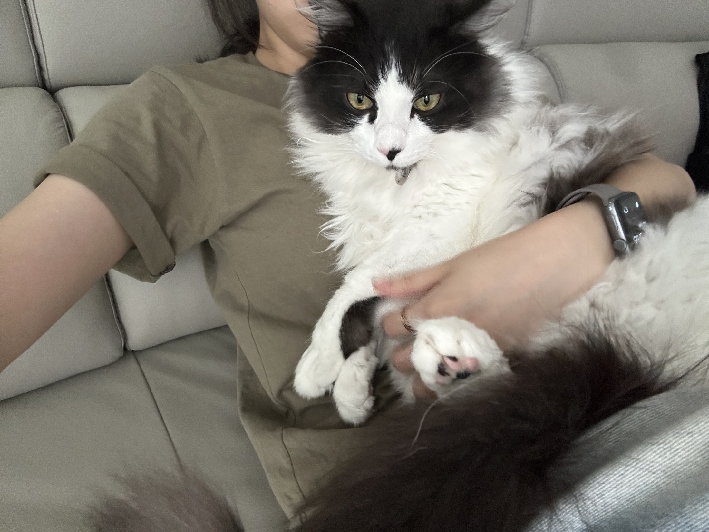

04 / GROWING TOGETHER
함께 자라는 이야기.
성장기와 생애의 소중한 순간들
생일 외 성장 날짜와 첫 만남의 에피소드는 가족의 기록을 기다리고 있습니다.

네오의 실제 사진 · 가족의 품에서SCROLL TO EXPLORE │작은 발걸음으로 시작된, 우리의 이야기
2023년 8월 31일에 태어난 김네오.
노르웨이 숲고양이와 랙돌이 섞인 우리집 고양이입니다.
풍성한 흑백 털과 황록빛 눈, 그리고 연어맛 츄르를 좋아하는 취향까지.
생일은 인스타그램 공개 프로필을, 외모 소개는 가족이 제공한 실제 사진을 바탕으로 작성했습니다. 품종·성격·좋아하는 간식과 정기기부 이야기는 가족이 알려주신 내용을 담았습니다.
특징과 성격을 하나씩 알아가는 시간
EVERY LITTLE MOMENT
가족 곁에서 보내는 일상의 순간
A MOMENT WITH OUR FAMILY
쫑긋한 귀 아래 또렷한 눈빛, 얼굴 가운데의 흰 무늬, 가슴을 덮은 풍성한 털. 가족에게 안긴 이 사진에는 네오만의 작은 특징이 가득합니다.
사진 속 한 순간부터 앞으로 쌓일 성장 기록까지. 더 많은 네오의 사진과 이야기는 인스타그램에서 만나보세요.
네오 인스타그램 · @neo0_831게시물은 Instagram 로그인 상태에 따라 보이지 않을 수 있습니다.
아침부터 잠들기까지 예시 일정
성장기와 생애의 소중한 순간들
생일 외 성장 날짜와 첫 만남의 에피소드는 가족의 기록을 기다리고 있습니다.
05 / NEO GIVES BACK
네오는 기부로 따뜻한 마음을 나누고 있어요.
네오는 사회복지공동모금회 부산지회의 ‘착한펫’으로
매월 2만 원씩 정기기부를 이어가고 있습니다.
사회복지공동모금회 부산지회 · 착한펫
반려동물의 이름으로 매월 2만 원 이상 정기기부를 약속하는 사랑의열매의 나눔 프로그램입니다. 기부금은 취약계층과 반려동물을 위해 쓰입니다.
네오도 자신의 이름으로 이 나눔에 함께하고 있어요.
사랑의열매 착한펫 공식 안내네오의 참여 지회와 기부액은 가족이 제공한 정보이며, 제도 설명은 사랑의열매 공식 안내를 참고했습니다.
네오의 생일은 2023년 8월 31일입니다. 나이는 아래 프로필에서 오늘 날짜를 기준으로 확인할 수 있어요. 검정과 흰색의 긴 털을 가지고 있으며, 품종은 노르웨이 숲고양이와 랙돌 믹스입니다.
가족의 표현으로는 “사람으로 치면 ISTP”예요. 사람의 성격 유형을 빌려 네오를 소개하는 표현이며, 고양이를 대상으로 한 검사 결과는 아닙니다.
네오가 좋아하는 간식은 연어맛 츄르입니다. 좋아하는 장난감과 장소는 앞으로 더해갈 예정이에요. 하루 일정은 아직 예시입니다.
네오는 사회복지공동모금회 부산지회의 착한펫으로 매월 2만 원씩 기부하고 있습니다. 위의 ‘따뜻한 마음’ 섹션에서 네오의 나눔과 착한펫 제도를 확인할 수 있어요.